Goal-Conditioned Motion Generation
Conditioned on start and end points (spatial pokes), our model finds plausible motions that satisfy the conditioning:
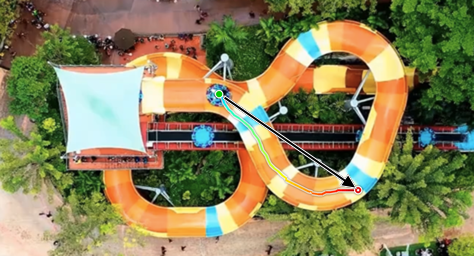
Path finding: sparse pokes induce globally coherent paths through the scene.
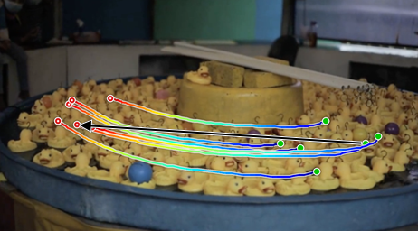
Rotational motion: the model captures circular and spinning dynamics.
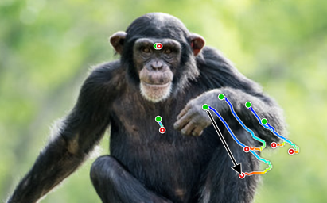
Understanding joints: articulated structures move coherently instead of as independent points.
From a single start frame, our model generates multiple coherent futures, illustrating the diversity of the learned motion distribution:
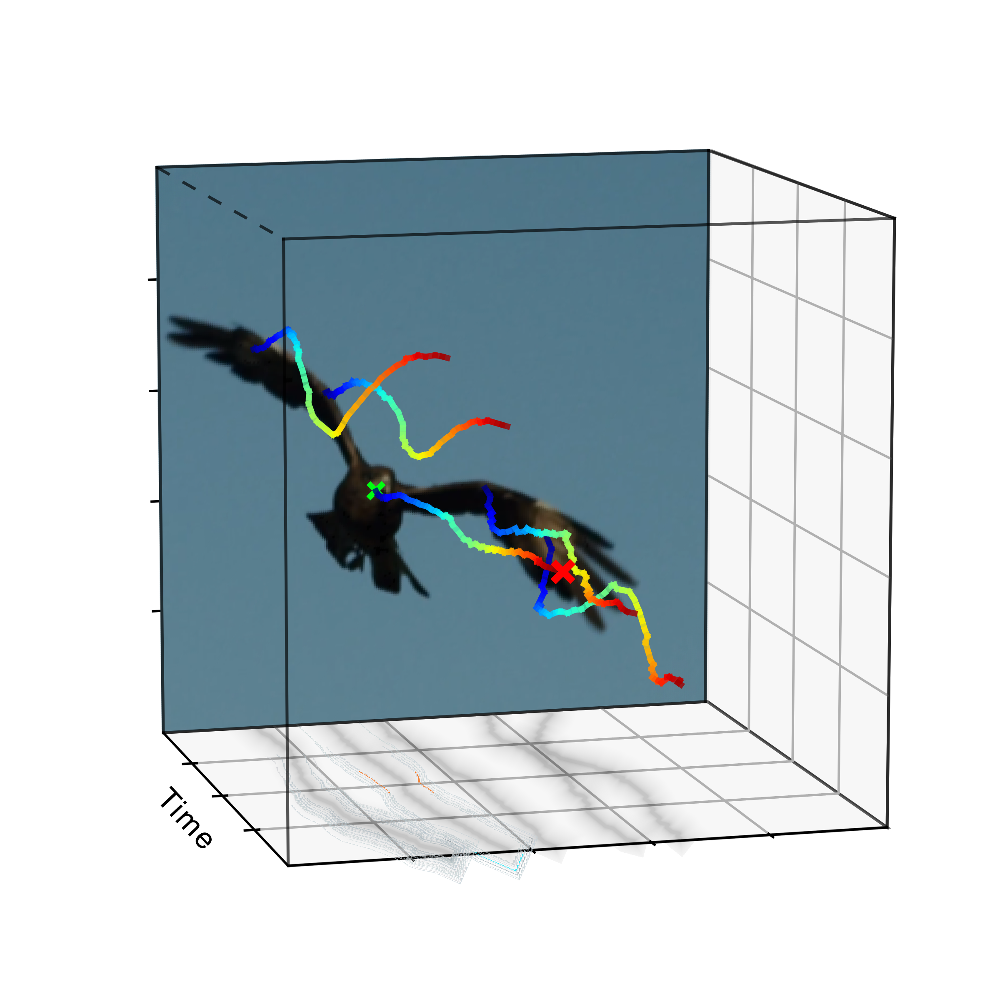
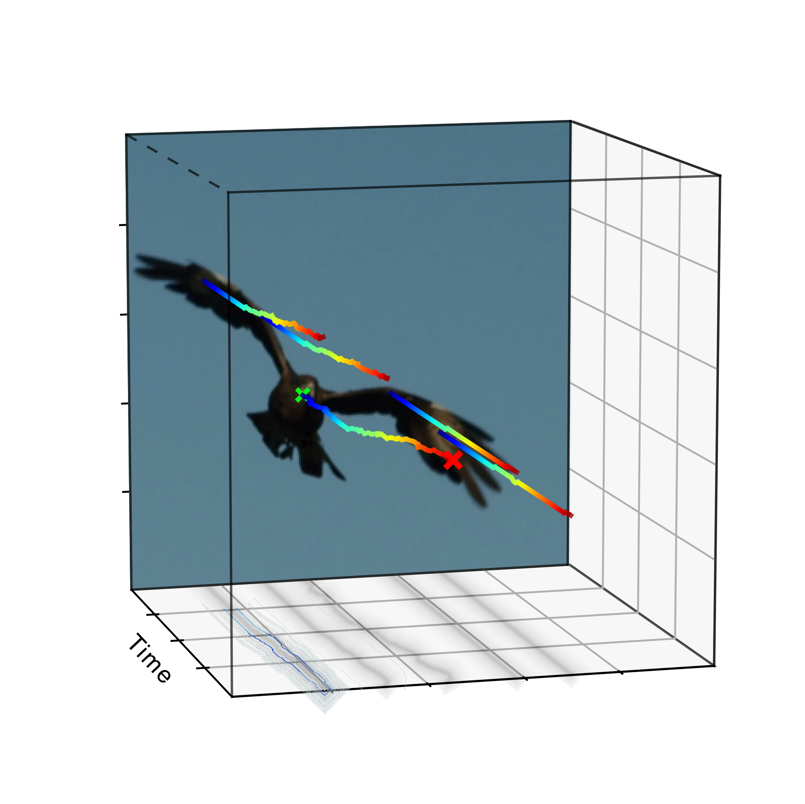
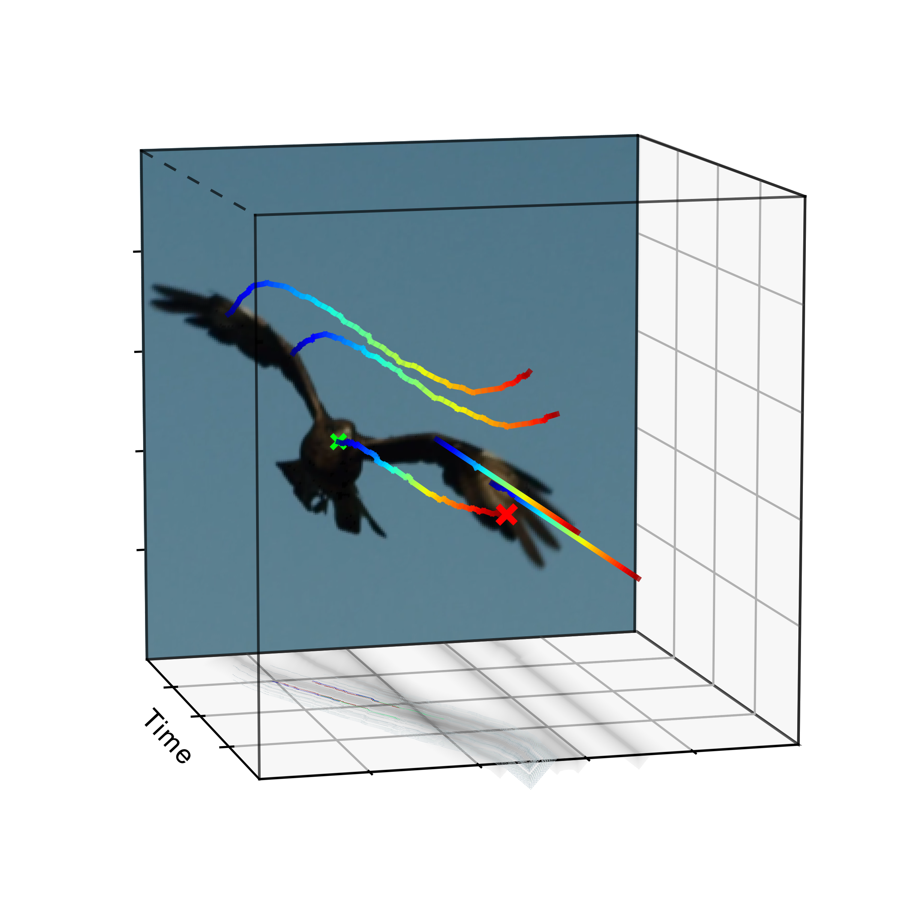
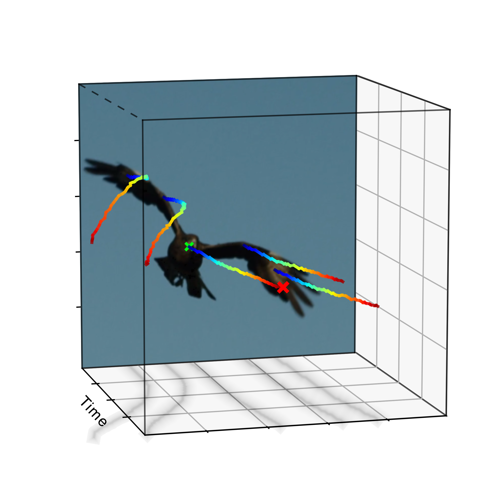
Comparison against Motion Predictors
On open-domain videos, we compare against prior motion predictors under different poke-conditioning sparsities, from a single poke to dense guidance. Our latent motion model achieves the best generation quality and conditioning adherence across the board while being substantially faster than both flow-based and trajectory-based baselines.
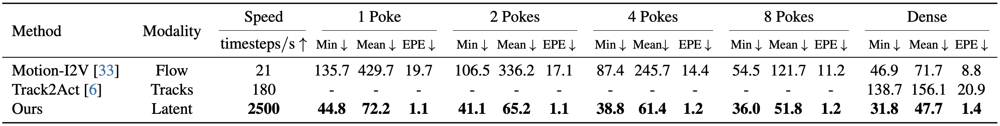
Comparison against SOTA video models
We compare against Wan and Veo 3 in a goal-conditioned setup where video baselines receive the start and end frame, while our model receives the start frame and a poke-based motion goal. Since video models do not expose explicit motion trajectories, we track their generated videos with CoTracker and evaluate the recovered motion using the same metrics. In both sample-matched and time-matched settings, our kinematics-first model outperforms the video baselines, with the gap widening substantially when wall-clock sampling time is matched.
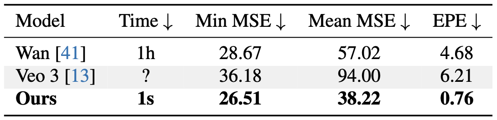
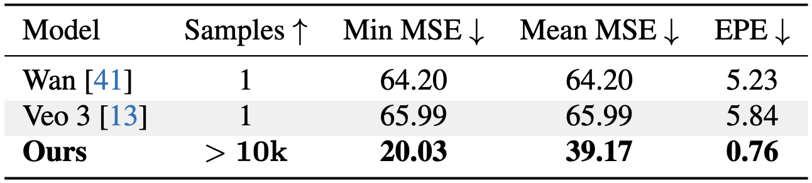
Action Prediction on LIBERO
Given a task description and a start frame, our model predicts how objects in the scene should move to solve the task. We train a small policy head to map our generated motions to 7D robot actions and rollout the policy:
Put both the cream cheese box and the butter in the basket
Turn on the stove and put the moka pot on it
Put the black bowl in the bottom drawer of the cabinet and close it
Put the yellow and white mug in the microwave and close it
Following the ATM and Tra-MoE evaluation protocols, our method outperforms both baselines across tasks, indicating stronger task-conditioned planning and scene understanding:
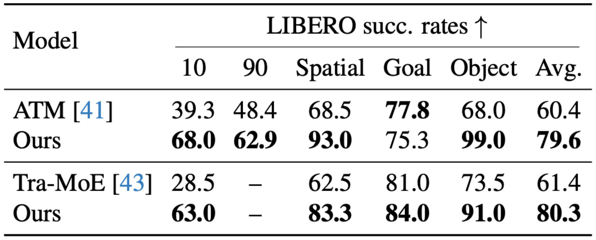
How It Works
We learn a dense motion space by encoding sparse tracker trajectories and the start frame into a compact latent motion grid that supports dense reconstruction at arbitrary spatial query points.
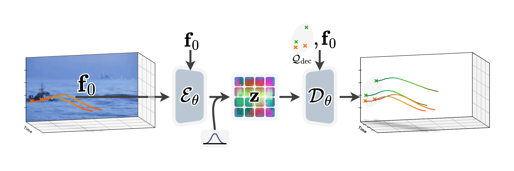
We then generate goal-conditioned motion latents directly in this learned motion space from scene context plus text or spatial-poke conditioning.
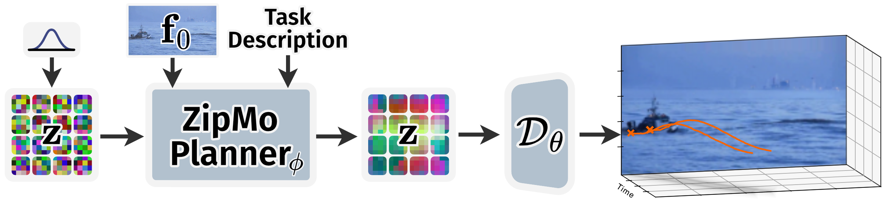
Compression Improves Efficiency and Semantics
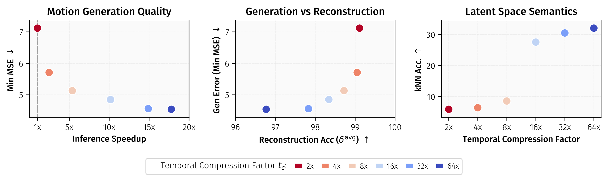
Stronger temporal compression improves motion generation quality and throughput while only mildly reducing reconstruction fidelity, and leads to a more semantic motion space.
Additional Results
Conditioned on the start and end position of a specific point, our model generates a distribution of trajectories, yielding a distribution of positions. We visualize the original video on the left alongside the distribution of positions generated by our model on the right.
Per column, we show multiple generated motions conditioned on spatial pokes shown in the top row.
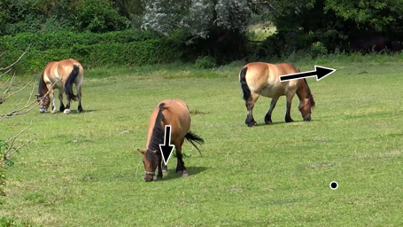
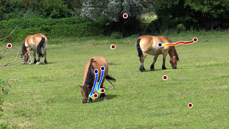
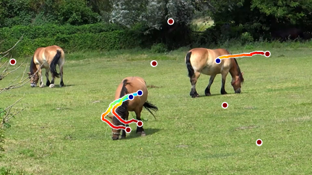
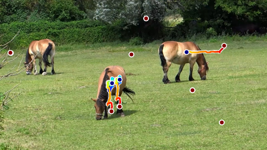
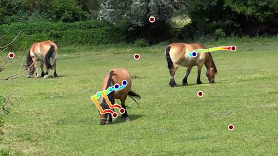
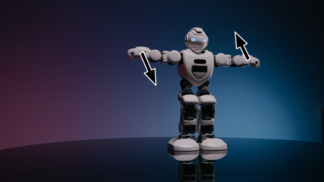
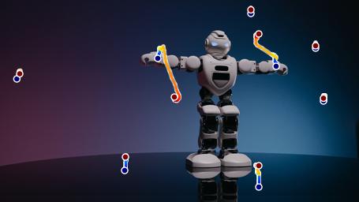
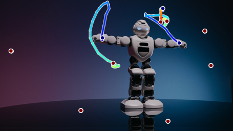
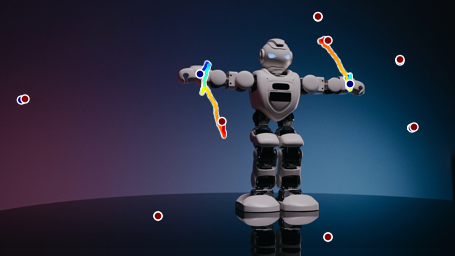
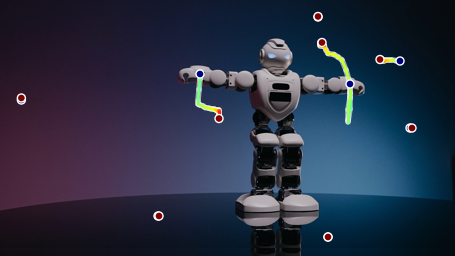
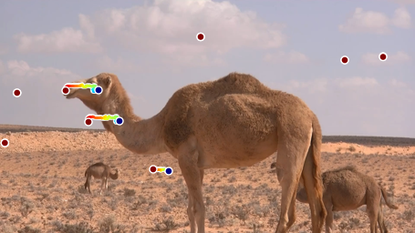
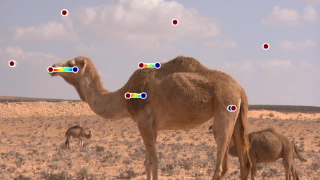
BibTeX
@inproceedings{stracke2026motionembeddings,
title = {Learning Long-term Motion Embeddings for Efficient Kinematics Generation},
author = {Stracke, Nick and Bauer, Kolja and Baumann, Stefan Andreas and Bautista, Miguel Angel and Susskind, Josh and Ommer, Björn},
booktitle = {Proceedings of the IEEE/CVF Conference on Computer Vision and Pattern Recognition},
year = {2026}
}